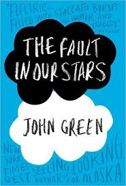

Once Upon a Time
The Fault in our Stars

The Fault in Our Stars
The Fault in Our Stars
by John Green
Review
Despite the tumor-shrinking medical miracle that has bought her a
few years, Hazel has never been anything but terminal, her final
chapter inscribed upon diagnosis. But when a gorgeous plot twist
named Augustus Waters suddenly appears at Cancer Kid Support Group,
Hazel's story is about to be completely rewritten.
Insightful, bold, irreverent, and raw, The Fault in Our Stars is
award-winning author John Green's most ambitious and heartbreaking
work yet, brilliantly exploring the funny, thrilling, and tragic
business of being alive and in love.